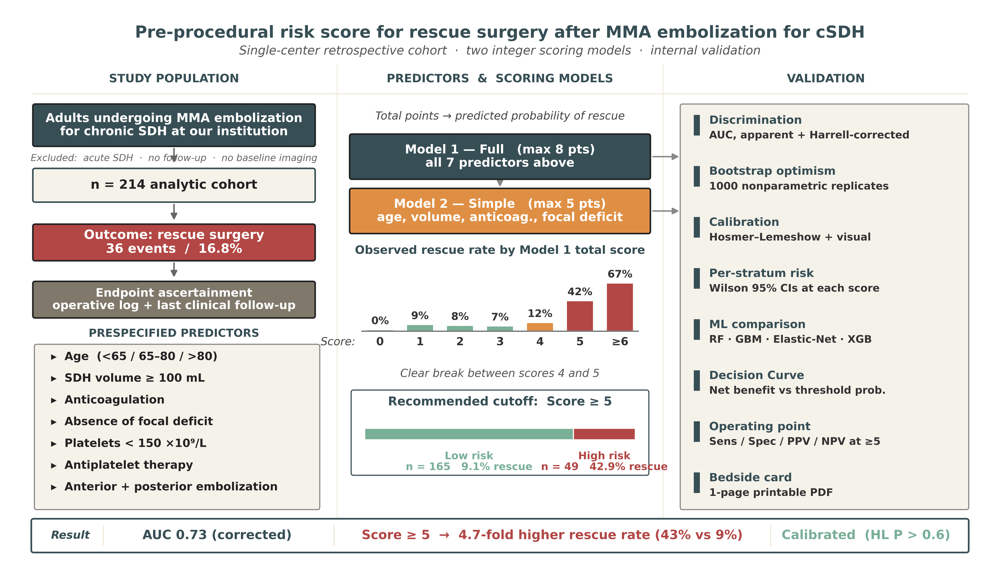
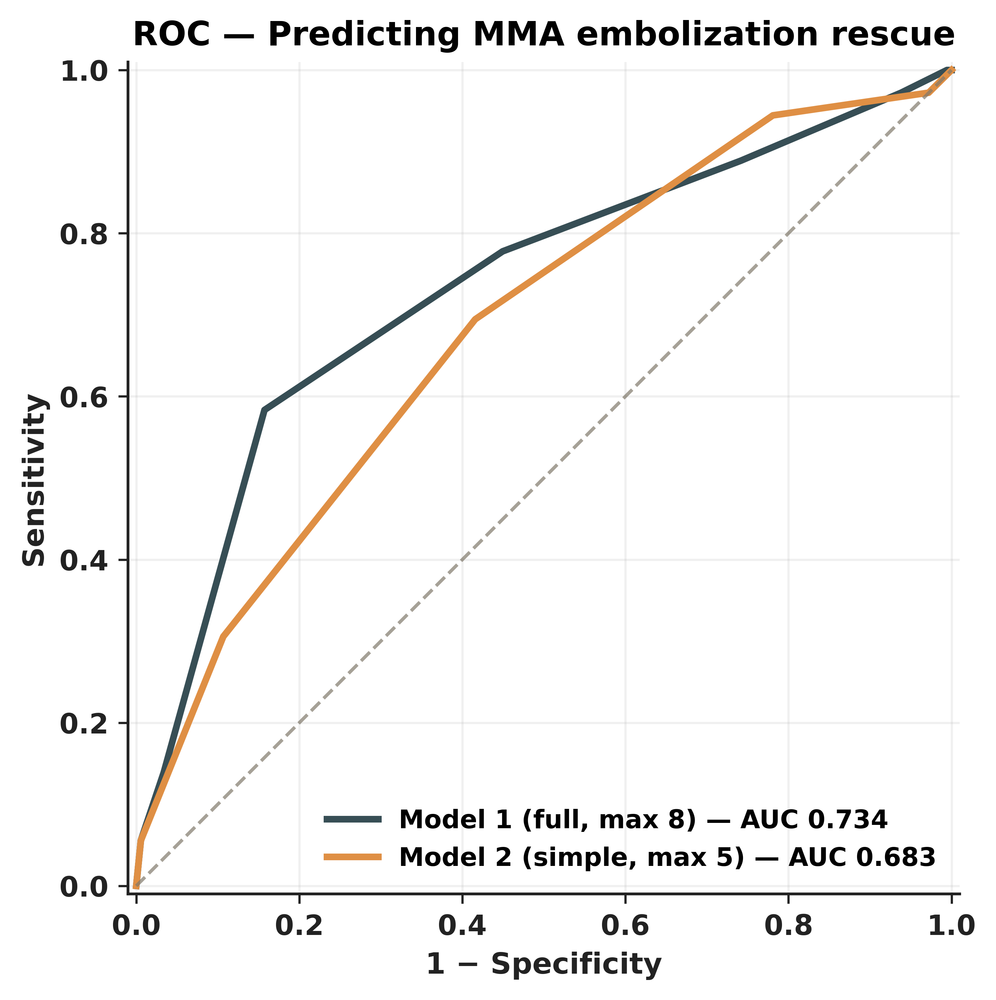
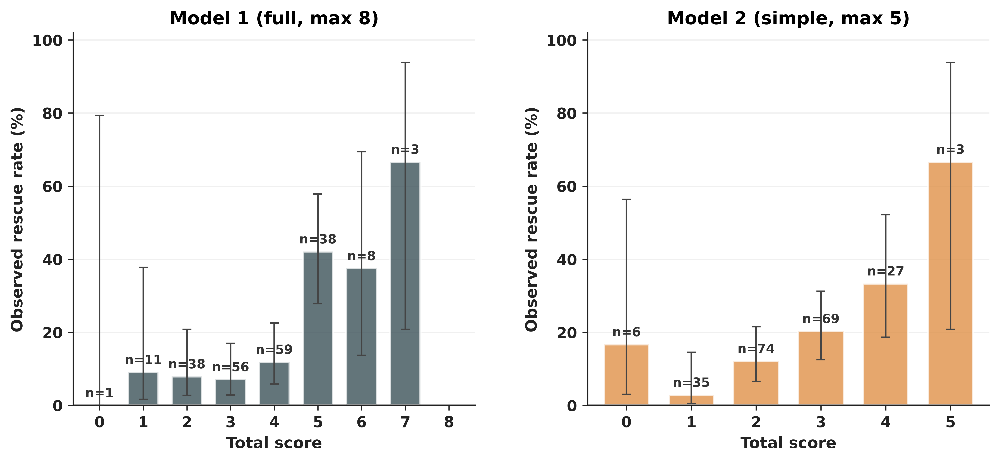
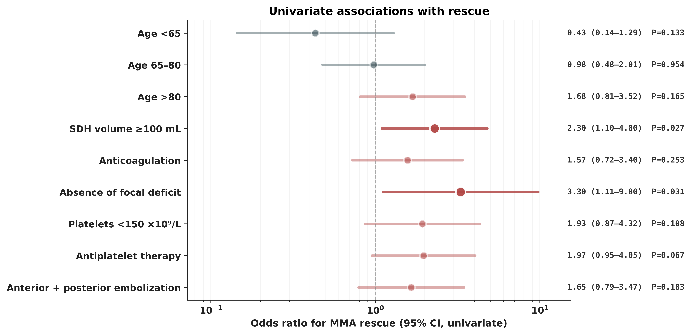
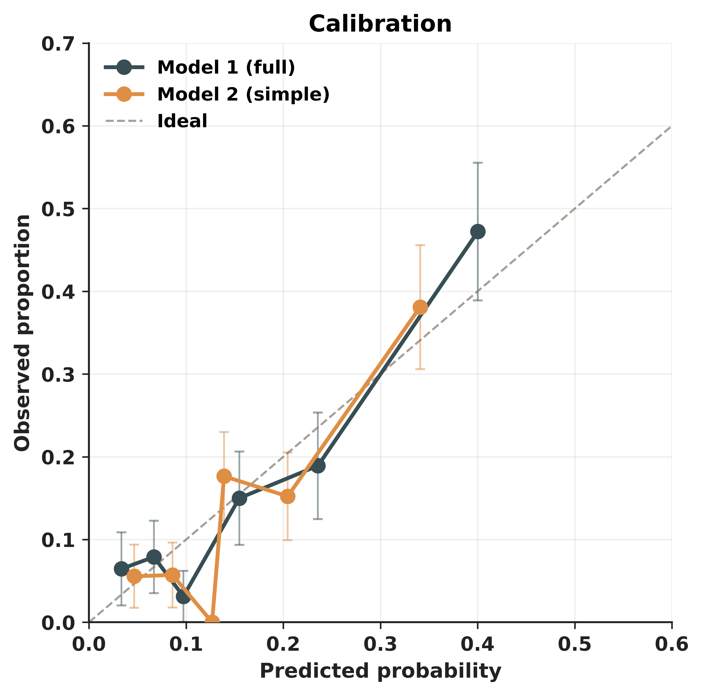
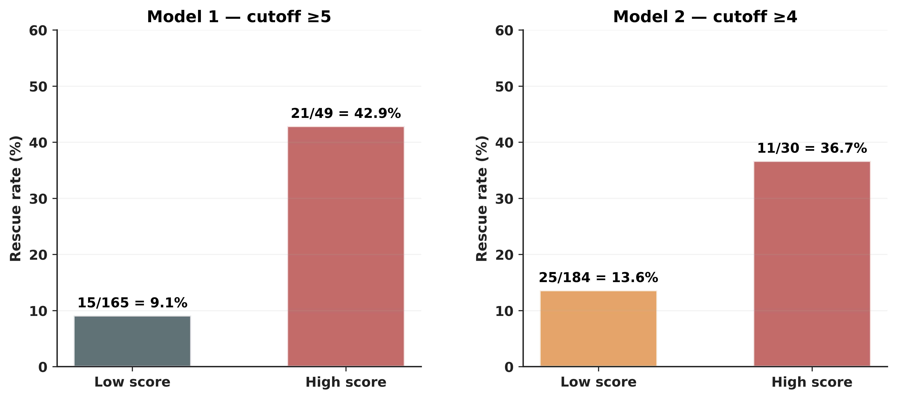
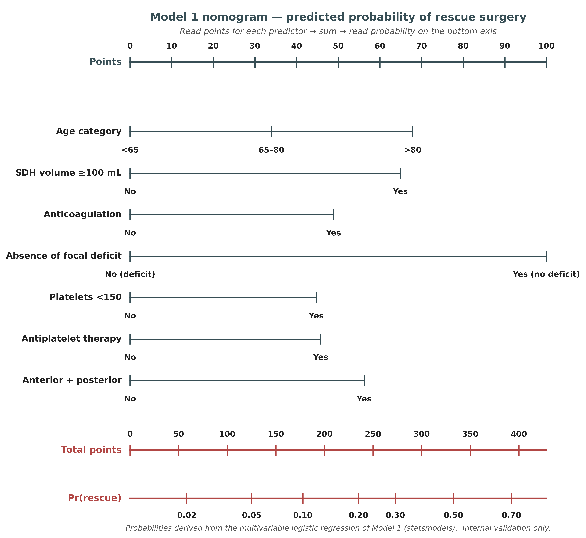
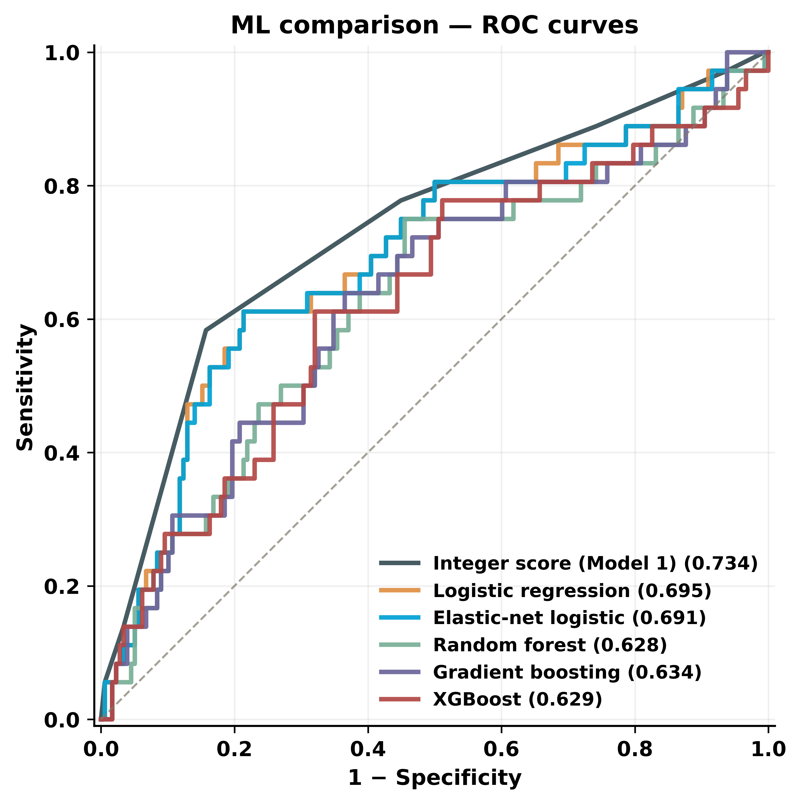
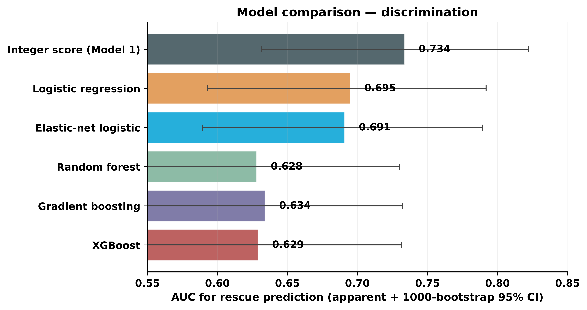
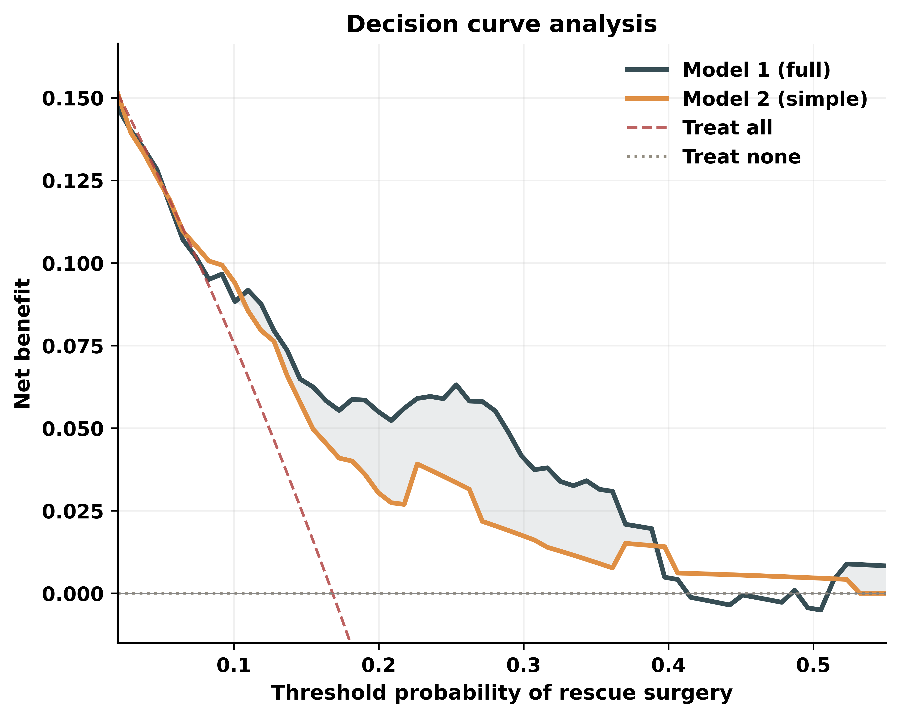

Clinical decision support · Neurointervention
Pre-procedural risk of rescue surgery after middle meningeal artery embolization for chronic subdural hematoma. Validated in 214 consecutive patients (36 rescue events).
Enter the patient's pre-procedural variables. The calculator returns the probability of post-embolization rescue surgery from the multivariable logistic regression that underpins Model 1 (full, 8-point) and Model 2 (simple, 5-point). All computation happens locally in your browser.
—
Follow standard post-embolization surveillance.
Wilson 95% confidence intervals from the derivation cohort.
| Score | n | Failures | Rate | 95% CI |
|---|---|---|---|---|
| 0 | 1 | 0 | 0.0% | 0–79.3 |
| 1 | 11 | 1 | 9.1% | 1.6–37.7 |
| 2 | 38 | 3 | 7.9% | 2.7–20.8 |
| 3 | 56 | 4 | 7.1% | 2.8–17.0 |
| 4 | 59 | 7 | 11.9% | 5.9–22.5 |
| 5 | 38 | 16 | 42.1% | 27.9–57.8 |
| 6 | 8 | 3 | 37.5% | 13.7–69.4 |
| 7 | 3 | 2 | 66.7% | 20.8–93.9 |
| Score | n | Failures | Rate | 95% CI |
|---|---|---|---|---|
| 0 | 6 | 1 | 16.7% | 3.0–56.4 |
| 1 | 35 | 1 | 2.9% | 0.5–14.5 |
| 2 | 74 | 9 | 12.2% | 6.5–21.5 |
| 3 | 69 | 14 | 20.3% | 12.5–31.2 |
| 4 | 27 | 9 | 33.3% | 18.6–52.2 |
| 5 | 3 | 2 | 66.7% | 20.8–93.9 |

Figure 1. Study flow and analytic schema.

Figure 2. Receiver operating characteristic curves for Model 1 and Model 2.

Figure 3. Observed rescue rate by total score with Wilson 95% CIs.

Figure 4. Univariable logistic-regression odds ratios (95% CI).

Figure 5. Calibration — predicted vs. observed proportion.

Figure 6. Bedside-friendly dichotomized score thresholds.

Figure 7. Model 1 Harrell-style nomogram (multivariable logistic regression). Read points for each predictor, sum, and read predicted probability on the bottom axis.

Figure 8. Machine-learning comparison — ROC curves. The integer Model-1 score (AUC 0.734) outperforms random forest, gradient boosting, and XGBoost at this event count.

Figure 9. Cross-validated AUC across all six models with 1000-bootstrap 95% CIs.

Figure 10. Decision curve analysis — net benefit vs threshold probability. Model 1 dominates Model 2, treat-all, and treat-none across the clinical range (10–40%).
The full IMRAD manuscript with 30 references, Table 1, and the complete results is available as Word and HTML.